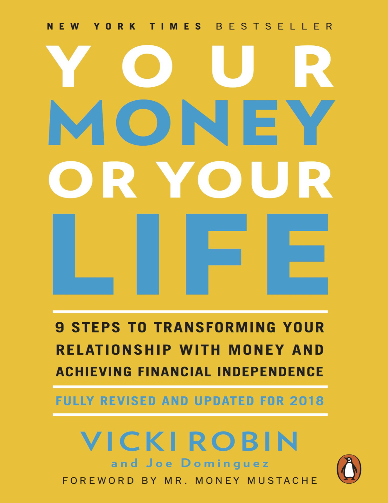

By Vicki Robin & Joe Dominguez · 2018 · 311 pages
Peter Adeney, the blogger behind Mr. Money Mustache, opens with a deceptively simple premise: the only reason to read any book about money is to give yourself a better life. Money itself is not what anyone is really chasing. Would you lock yourself in a dark, silent box forever in exchange for becoming a billionaire? Of course not. What you actually want is to become a lighthearted, productive, free person who never has to worry about money again. A healthy relationship with money is simply a by-product of living a happy, healthy life.
Most financial media fails because it chases the wrong target. Despite record income levels across the developed world, most people remain broke with record levels of debt, endlessly pursuing more money and more things without questioning what they are buying or why. The standard advice is "too meek," Adeney argues. Follow your heart, spend on what you love, just budget carefully. The reality is that human beings are far more similar than different. Centuries of philosophy and decades of formal research have identified a handful of universal happiness drivers: friendship, health, community, overcoming challenges, ingenuity, and feeling in control of your life. These work for everyone, regardless of income.
"It is for this reason that Your Money or Your Life talks so much about so much more than money. It is a personal development guide to help you figure out what you really want out of your life, while also training away the money-wasting habits that you have probably developed that are getting in the way of it." — Mr. Money Mustache
Adeney frames the book as training, not tips. You get better slowly, repeating small steps every day that build naturally into bigger accomplishments. One day you look back and barely recognize your past self. The method works on the root of the problem—personal beliefs and habits—not just the symptoms of bank and credit card statements. And almost everything we buy comes with unseen environmental destruction somewhere else, so streamlining your lifestyle for happiness also dramatically cuts your ecological footprint.
The bigger picture Adeney paints is environmental. Almost everything we purchase carries unseen destruction—extraction, manufacturing, shipping, and eventual landfill. Streamlining your lifestyle for happiness simultaneously and dramatically reduces your ecological footprint. With just a few expensive "true passions" like luxury cars or globe-trotting vacations, you can lock up almost any lifetime's income and eliminate your chance of claiming the universal happiness prizes. Even well-known finance gurus repeat the "spending money equals happiness" myth, creating what Adeney calls "a really well-polished conveyor belt of personal desire."
Adeney is unequivocal about the book's power: "Make no mistake—it's almost impossible to read this book thoroughly without also drastically improving your financial situation for the rest of your life." The distinction he draws between this book and the typical personal finance bestseller is that Robin and Dominguez address root causes—the beliefs, patterns, and emotional programming around money—rather than symptoms like bank balances and credit card statements. The foreword sets the tone for a book that refuses to separate money from meaning.
What makes this foreword effective is Adeney's credibility. He retired in his early thirties, lives on a fraction of his former engineering salary, and has built one of the internet's largest personal finance communities around the principles this book pioneered. His endorsement is not theoretical—it's biographical. He is living proof that the program works, and his willingness to frame consumerism as a curable disease rather than a personal failing sets up the book's "no shame, no blame" philosophy.
Adeney also takes aim at the temptation of convenience, status, and luxury. We justify expensive purchases as "true passions"—but with just a few of those, you can lock up almost an entire lifetime's income. The polished conveyor belt of desire keeps pulling satisfied bucket-list items off one end while throwing new goals onto the other. You end up standing in the same place you started. Endless desire is one of the pitfalls of human nature, and curing it is "one of the first things you need to do if you want to get ahead more quickly."
The foreword also serves as a bridge between the book's 1992 origins and the modern FIRE movement. Adeney acknowledges that the original edition influenced him directly, and that the updated version speaks to a new generation dealing with student debt, the gig economy, and social media pressure. His message is that the fundamentals have not changed: human happiness comes from the same sources it always has, and the fastest path to financial freedom runs through consciousness, not income.
Vicki Robin opens the 2018 edition with a set of promises that sound almost too good: spend less and enjoy life more, flatten your debt, save more than you thought possible, retire earlier than you imagined, and put your life in service to your values rather than your time in service to money. The key claim is that Financial Independence is not simply "no longer having to work for money." It is a process of liberation that begins with freeing your mind from the illusion that buying stuff will make you happy.
The origin story of the program traces back to Joe Dominguez, Robin's partner and co-creator. Latino by descent, raised on "welfare cheese" by a mother who never learned English in Spanish Harlem, NYC, Joe was a runty kid who became the brains of his neighborhood gang before stumbling into a Wall Street firm. He never graduated college but developed some of the first tools of technical analysis in the early 1960s. He did not invest his own money—he sold his expertise to investment banking firms and saved with a single goal: retire by thirty. He achieved it, then spent the rest of his life as a full-time volunteer, donating all proceeds from teaching to transformational projects until his death from cancer in 1997.
Robin describes returning to the work after a decade of island retirement. At a community circle, she heard an eighty-year-old worried about outliving his money, a mid-career professional stuck in a rut, and a college sophomore already twenty thousand dollars in debt. The FIRE movement (Financial Independence, Retire Early) had spread far since 1992, and Robin decided to update the classic. The world had changed: pensions were dying, nearly one-fifth of Americans over sixty-five depended solely on Social Security, and young people fledged into what she calls the YOYO class—You're On Your Own.
Robin introduces adaptive young people who embody the new fluidity. Brandon skipped college after watching his eldest brother get a degree and end up at the same big-box-store job. He went from farmhand to tow truck driver to saving for trade school, targeting forty dollars an hour in computerized auto repair. Chris paid off his engineering debt in one year, saved enough for a year of service projects, then returned to an exciting new role. Naomi used Running Start in high school, community college, then university—finishing her social work degree without crushing debt. The Bureau of Labor Statistics confirms: people increasingly zigzag through a dozen jobs, moving up, sideways, and down.
The Four FIs provide the book's philosophical scaffolding. Financial Intelligence means stepping back from assumptions and observing money objectively. Financial Integrity means aligning all financial choices with your values. Financial Independence is freedom from crippling beliefs, debt, and dependence. Financial Interdependence is the recognition that the independence we crave is separation from dead-end routines, not from one another. Robin identifies three tribes within FIRE: the Ninjas (number optimizers and coupon-clippers), the Minimalists (Thoreau-like seekers of meaning over things), and the DIYers (builders, farmers, and makers wringing joy from the material world). And two paces: Turtles who build slowly toward a comfortable middle-age FI, and Hares like Joe who sprint toward freedom by thirty.
The results are striking. On average, people at all income levels who follow the program reduce expenses by twenty-five percent—and most report feeling happier. Relationships improve, inner conflicts between values and lifestyle resolve, free time increases, and life becomes one integrated whole instead of two warring halves.
The introduction also addresses the skeptic's question: who is this book for? Anyone who earns or spends money. The radical promise is "enough"—having more is an endless horizon, but defining enough requires asking what makes you happy, what's most important, and what values you will never compromise. In the 1980s seminars, participants in every income bracket said they would need fifty percent more to be happy. When asked to rate their happiness on a scale of one to five, there was no significant difference between top and bottom earners. Daniel Kahneman's research confirms: beyond roughly $75,000 a year, more money does not buy more happiness.
Robin recommends reading the entire book start to finish before beginning the steps, noting that what is new in this edition includes extensive updates to Chapter 6 (frugality in the smartphone era), a heavily revised Chapter 9 (investment strategies beyond Treasury bonds), and the Money Talks methodology at the end. She describes a conscious, empowered relationship with money—not a "number"—as the real key to financial freedom.
The book opens with a question that is also a threat: "Your money or your life." If someone thrust a gun in your ribs, you would hand over your wallet without hesitation. You value your life more than money. But do you? The chapter introduces a parade of people who discovered the answer was uncomfortably ambiguous. Rachel Z. worked seventy hours a week as a successful saleswoman and found herself wondering "Is this all?" Don M. loved music but worked in data processing, accumulating all the trappings of adulthood that were supposed to make him feel like a man. Elaine H. hated her programming job but did it so well she couldn't be fired, filling the void with sports cars and country houses that never balanced the boredom.
Kristy was a classic DINK (double income, no kids) in high-paying tech when she watched a coworker collapse from stress and nearly die at his desk. In Japan they call it karoshi —death by overwork. The man came back a week later acting like nothing happened. Then her boss was hospitalized with a blood clot, her best friend was fired, and Kristy found herself popping anxiety meds and bolting awake at three in the morning. "I can't do this anymore. This isn't worth it." Nicole followed her father's script into an advanced nursing degree—eight years and over a hundred thousand dollars in debt—only to find that her net earnings couldn't pay down the principal faster than interest accumulated.
Robin describes the average worker's day with brutal precision: alarm at 6:45, shower, dress in professional uniform, commute, deal with impossible deadlines, sigh of relief when the restructuring axe falls on other heads, commute home, eat, watch TV, eight hours of blessed oblivion. "And they call this making a living? For many of us, isn't it closer to making a dying?" We are killing ourselves—our health, relationships, sense of joy—for our jobs, so slowly we barely notice. Even those who like their jobs sense a larger arena beyond the 9-to-5.
The chapter's most powerful data comes from a series of seminars where over a thousand participants rated their happiness on a 1-to-5 scale. The average was consistently between 2.6 and 2.8—not even a three—regardless of whether income was under fifteen hundred or over six thousand dollars a month. When asked how much money it would take to make them happy, the answer was always "more than I have now," typically by fifty to one hundred percent. The National Opinion Research Center confirms: the percentage of Americans describing themselves as "very happy" has been declining since the late 1950s, even as real incomes have soared.
"We've developed a national disease based on how we earn money." — Vicki Robin
The environmental dimension is equally stark. The Ecological Footprint shows that if everyone consumed the way North Americans do, we would need four earths. Earth Overshoot Day —the date when humanity has used up all the resources the planet can renew in a year—fell on December 21 in 1971, November 12 a decade later, and August 3 by 2016. Robin traces the origin of consumerism to the 1920s, when the Industrial Revolution's machinery had so successfully filled human needs that workers began asking for shorter workweeks. Two alarmed groups—moralists and industrialists—converged on a solution: educate the populace to want things they didn't need. In 1929, Herbert Hoover's Committee on Recent Economic Changes declared: "Wants are almost insatiable; one want satisfied makes way for another."
The chapter turns to the creation of consumer culture. Americans used to be called "citizens." Now we are "consumers"—which by dictionary definition means people who "use up," "waste," and "destroy." Consumerism was invented in the early 1920s when the Industrial Revolution's machinery had so successfully filled human needs that workers began asking for shorter workweeks. Two alarmed groups—moralists worried about idle hands and industrialists worried about halted growth—converged on a solution: educate the populace to want things they didn't need. By 1929, Herbert Hoover's Committee declared "wants are almost insatiable." The 1955 US retailing analyst Victor Lebow made the program explicit: "Our enormously productive economy demands that we make consumption our way of life, that we seek our spiritual satisfaction in consumption." With smartphones and one-click purchasing, the infrastructure for this program is now complete.
The "more is better" mentality has deep roots in American frontier psychology—Manifest Destiny as a political sales pitch, Star Trek calling space "the final frontier." But "more is better" turns out to be a formula for permanent dissatisfaction. In an environment of more, "enough" is always receding. You lose the ability to identify the point of sufficiency. The economy's version—"growth is good"—runs into the same wall. Nothing in nature grows forever. Every plant, animal, and population reaches a maximum and then stabilizes or declines. By ignoring this, both individuals and the economy are exceeding the earth's capacity.
The chapter introduces two concepts that anchor everything that follows. The first is the Fulfillment Curve: as spending rises, fulfillment climbs steeply through survival, comforts, and luxuries, peaks at a point called "enough," then declines. Everything beyond that peak is clutter. The second is the gazingus pin—any item you can't pass without buying. You come to the gazingus pin section, your mind cranks out justifications, "an alien arm" reaches out and grabs it, you go to checkout like a "windup zombie," arrive home, put it in a drawer with five others, and forget about it. Step 1 asks you to calculate your total lifetime earnings and current net worth—to confront the gap between what flowed in and what you have to show for it.
Ondrea and Kyle W. open the chapter as a cautionary couple. Kyle, a twenty-two-year-old idealist "allergic" to money, had accumulated fifteen thousand dollars in debt he planned to pay off "someday." Ondrea had over forty thousand in debt from equating independence with accumulating possessions. When they married, Kyle's "I do" nearly quadrupled his debt. Doing Step 1 forced them to face a net worth of minus fifty-five thousand dollars.
Joe Dominguez's famous seminar performance gets the chapter's best set piece. He would come onstage in Wall Street costuming, fix on the biggest guy in the room, and bark: "How big is yours?" After the shocked silence: "I'm just asking how big your paycheck is. Isn't that really the most personal question you can ask?" Then he would pull out a hundred-dollar bill, stretch it, take out a lighter, and threaten to burn it. The room would gasp and lurch forward. He would snap the lighter shut. "What was that reaction? Clearly money is more than pieces of paper." One by one he demolished every common definition—medium of exchange (try spending dollars with cannibals in a piranha-infested river), store of value (ask Enron pensioners or Madoff victims), status, power, evil—until only one remained that was always true for every person, one hundred percent of the time.
"Money is something you trade your life energy for." — Joe Dominguez
This reframe changes everything. Your real hourly wage is not your nominal pay divided by forty hours. Step 2 demands you account for every hidden cost of employment: commuting (7.5 hours/week, $100/week), costuming ($25/week), meals out because you're too tired to cook ($50/week), daily decompression (the beer and TV ritual), escape entertainment, vacation as recovery rather than enrichment, and job-related illness. A person earning $1,000 per week at an apparent rate of $25/hour may actually be investing seventy hours per week and netting only $700 after job costs—a real hourly wage of $10.
Mark H., a construction project manager, discovered nearly half of what he made was spent on the job itself—gas, repairs, lunches. "I could stay home, work part-time where I live, and actually save money by making half of what I formerly made." He quit to train as a counselor. The second half of Step 2 is tracking every cent that comes into or goes out of your life. Robin presents this as a spiritual discipline, like watching the breath in meditation. "Instead of watching your breath, you watch your money."
A life expectancy table drives the point home. At forty, you have roughly 356,000 hours of life energy left. Subtract a third for sleep and another fifteen percent for body maintenance—cooking, cleaning, errands —and you can divide your remaining hours bank in half. Those hours are all you've got. There is nothing more valuable than your time, and separating work from wages means all moments in your life matter, not just the ones you're paid for.
Robin describes money as functioning on four levels. At the material level, it's pieces of paper, metal, and plastic. At the psychological level, it's your fears and longings, your personality as a spender or saver. At the cultural level, it's the embedded beliefs that more is better and growth is good. At the life energy level, it's something you trade the hours of your life for. The first three layers are real and important but not always true. The fourth is what transforms your relationship with money, shining a bright light on all false notions.
Money is also like water, Robin suggests—it flows, and as it flows, it nourishes life. We feel happy when it flows our way, distressed when it doesn't. And money is a game we all play, complete with bogeymen like inflation, recession, and the cost of living index. If the economist-gods announce a recession, we skip vacations even when our bank accounts are full. She invokes The Matrix: knowing money is life energy is like taking the red pill. "Winning isn't having the most toys. It's having precisely what you need and nothing in excess, and being able to stop playing the game at will."
The chapter's tracking methodology is illustrated through several practitioners. Carolyn H. and her husband use round numbers and an "unaccounted-for cash" category— seeing a large number in that column motivated him more than any argument. Karen E. has tracked for fourteen years and used the data to design a life split between Europe and the States. Don S., a young Mr. Money Mustache fan, swapped restaurant lunches for home cooking, cut his food expenses by nearly fifty percent, and funneled the savings into a three-week European trip. The reference to The Millionaire Next Door provides the statistical backing: people with high net worth relative to income know how much they spend on clothes, travel, and housing. Those who don't achieve high net worth have no idea.
Robin insists the program is the opposite of a budget. A budget imposes standardized categories from the outside. This program is an awareness tool built from the inside out—like mindful eating versus dieting. Bob Schwartz in Diets Don't Work! offers four rules: eat when hungry, eat what your body wants, eat each bite consciously, stop when your body has had enough. The financial parallel: follow internal signals, observe patterns over time, adjust through consciousness rather than deprivation.
Step 3 is the Monthly Tabulation. After a month of tracking, you establish spending categories that reflect your unique life. Within each category, separate the subcategories that reveal what is actually happening. Food, for instance, should not be one line. Break it into home cooking, restaurants, entertaining, snacking, coffee breaks, TV food. "When you throw your hands up crying 'Where does it all go?' you can answer yourself: 'It goes to the candy machine on the third floor of my office building.'" One doctor discovered twenty percent of his income was consistently unaccounted for—until he unearthed a shoe fetish (golf shoes, running shoes, boating shoes, hiking shoes, climbing shoes) while rarely wearing anything but slip-ons around the house.
Anita C., a shopaholic addicted to clothes and costume jewelry, provides the chapter's transformation story. She continued shopping after starting the program until one day at a department store, surveying sweaters, something snapped: "Is this going to be what I do with my life? I have enough already." She left empty-handed, and eventually discovered she had lost her desire to shop entirely. A budget would have told Anita to spend less. Awareness helped her understand why she was spending.
The crucial step is converting dollars spent in each category to hours of life energy. If your real hourly wage is ten dollars, that fifty-dollar restaurant meal cost five hours of your life. The program's approach to "unusual expenses" is revealing: after hearing for a year straight that "this was an unusual month," Robin realized that every month is unusual. Extraordinary expenses—car repairs, medical bills, holiday gifts—are a continuing part of life, not exceptions to it. Building them into your awareness rather than treating them as surprises is essential.
Robin distinguishes between judgment and discernment. Judgment means blaming yourself in terms of good and bad. Discernment means sorting true from false, wheat from chaff. Through the discipline of writing down every cent, you begin to discern which expenses are fitting and fulfilling and which are unnecessary, extravagant, or embarrassing. This discernment connects to what Robin calls "the higher faculty that knows the truth and recognizes what we really want before we die. Aligning your spending with this faculty is the key to Financial Integrity."
The chapter also details specific category guidance that makes the system practical. Housing should distinguish between mortgage and rent, utilities, and the mortgage tax deduction. Clothing should separate utility (everyday wear), fashion (work wardrobe), and specialized recreational apparel. Transportation should break out commuting costs from pleasure driving. Technology—now a substantial category—should distinguish work tech from leisure tech. Entertainment should separate streaming services from social events. The more honest and granular the subcategories, the more accurately they describe your actual lifestyle rather than the one you imagine you're living.
The chapter's mantra is "no shame, no blame"—a reminder that confronting the truth about your spending is an act of self-compassion, not self-punishment. Robin distinguishes between recrimination (which immobilizes) and discrimination (which illuminates). "How fortunate to be able to do this yourself, instead of being audited by the IRS." The Monthly Tabulation is the most accurate description of your lifestyle ever assembled —more accurate than any budget, résumé, or social media profile. "Forget the mythology of your life. Forget the story you tell yourself and others."
The Monthly Tabulation's bottom line is not a budget number to hit but an awareness picture to study. Total income minus total expenses equals total saved. Robin introduces income subcategories too: wages versus interest versus side hustles versus "Selling Off My Clutter." A creative friend named Justin trades ten hours of household work for a room in an older woman's home and plans to couch-surf across America in a camper. Where does foraging go—Food? Entertainment? Not everyone's squiggly life fits into the straight lines of a spreadsheet, and that's exactly the point.
Step 4 introduces three questions that Robin calls the heart of the program. Each month, for every spending category, you ask: (1) Did I receive fulfillment, satisfaction, and value in proportion to life energy spent? (2) Is this expenditure in alignment with my values and life purpose? (3) How might this expenditure change if I didn't have to work for money? For each category you mark an up arrow (increase), down arrow (decrease), or dash (stay the same). Over time, this simple practice creates an internal compass that replaces the external yardstick of "more is better."
The chapter traces the happiness research. Daniel Kahneman found that beyond roughly $75,000 per year, more money does not buy more happiness. Viktor Frankl, the psychiatrist who survived the Holocaust, argued that meaninglessness is the central neurosis of our time—"Sunday neurosis," the depression people feel on their day off when they realize nothing they do during the week has any personal meaning. Robin references the Purpose-in-Life test, used in prisons, rehab centers, and retirement homes. A sense of purpose is the best predictor of well-being, not income.
George Bernard Shaw's observation serves as the chapter's compass: "This is the true joy of life, being used for a purpose recognized by yourself as a mighty one." The three questions gradually shift your spending from unconscious reflex to conscious alignment. You stop spending on things that don't bring fulfillment, not through white-knuckle deprivation but through genuine indifference to what no longer serves you. The arrows on your Monthly Tabulation become a living document of your evolving values.
Robin tells the story of Joanna Macy, who at a Seva Foundation conference described what happens when people commit to service. They discover that meaning and happiness are inseparable—that contributing to something larger than yourself is not a sacrifice but the most reliable source of joy available. The chapter's argument is that once you define your own "enough," the fulfillment curve reverses direction. You stop adding clutter and start adding life.
The practical mechanics of Step 4 are deceptively simple. On your Monthly Tabulation, each category total is already expressed in hours of life energy (from Step 3). Now you apply the three questions to each category and mark an up arrow, down arrow, or dash. Over months, the arrows create a pattern. Categories that consistently get down arrows begin to shrink naturally, not because you're forcing a budget but because awareness has made the spending feel wrong. The program trusts that consciousness, not willpower, drives lasting change.
The third question—"How might this expenditure change if I didn't have to work for money?"—is the most transformative because it forces you to separate genuine desires from coping mechanisms. Much of what we spend is compensation for the stress and deprivation of work: the restaurant meal because we're too tired to cook, the vacation because we need to recover, the retail therapy because the job crushed our spirits. Remove the job and these expenses evaporate. What remains is what you actually want from life.
Robin notes that the word "enough" sounds either threatening or impossible in a consumer culture. Threatening because it implies limits in a world that worships growth. Impossible because we have been trained since childhood to believe that satisfaction is always just one purchase away. But enough is not deprivation. It is the Goldilocks point—not too much, not too little, just right. Everyone's enough looks different, and finding it requires the kind of honest self- observation that these three questions demand.
Buckminster Fuller's observation anchors the chapter's final argument. He claimed we had long since crossed the threshold where technology could meet everyone's basic needs. The question was never whether humanity has enough resources but whether individuals can identify what enough means for them. The program's three questions are a practical tool for answering that question, month after month, until the answer becomes instinctive.
Step 5 is the Wall Chart—a large graph plotting total monthly income and total monthly expenses, posted where you will see it every day. The chart adds the dimension of time to the static Monthly Tabulation. Each month you plot two points (income and expenses), connect them to the previous month, and watch the story of your financial life unfold. Robin insists on physical charts—18-by-12 inches or larger—because the visual impact of seeing your entire financial trajectory on a wall is qualitatively different from checking a number on a screen.
Elaine H., the computer programmer who hated her job, provides the signature transformation. Her first month revealed she was spending more than she earned ($4,770 expenses versus $4,400 income) without knowing it. She experimented: brought lunch, bought no new clothes. By month two, expenses dropped below income. But month three brought a rebound. The temptation was to either take up the burden of budgeting or quit entirely. Instead, "she realized that instead of trying to change the chart, she would need to change herself." Within four months she was debt-free, expenses down to $1,640, grocery bill cut from $359 to $203, restaurant spending from $232 to $77.
"Transforming our relationship with money doesn't happen in a blaze of insight. You need to do the steps—faithfully—and that takes time and patience. Impatience, denial, and greed are actually part of what is being transformed." — Vicki Robin
Three keys to sustaining change emerge: make it a habit rather than a choice (like brushing teeth), be accountable to someone (an accountability partner, a shared tracking app), and chart your progress visibly. Robin warns of the initial "purge and splurge cycle" —month one reveals overspending and triggers a wallet fast, month two expenses drop steeply, month three you rebound with a vengeance. The Wall Chart survives this cycle because it reveals the truth over time rather than demanding perfection in any single month.
Robin also warns of the credit card trap in the context of the Wall Chart. Credit card spending is invisible pain—research by Drazen Prelec and Duncan Simester at MIT found that people willingly pay up to twice as much for the same item when using credit cards versus cash. The physical act of handing over bills triggers a loss signal in the brain. Plastic bypasses it entirely. For people struggling with awareness, Robin suggests going "plastic-free" for a month, withdrawing cash from the bank and tracking every expenditure by hand. The discomfort is the point.
The social dimension of the Wall Chart matters too. Robin encourages sharing it with others—a partner, a friend, an accountability group. Social support is a key driver of behavior change. The FIRE community that grew from this book has made chart-sharing almost a ritual, with bloggers posting their net worth updates monthly. The book predates that culture but planted the seeds: make your financial life visible, let others see it, and the combination of accountability and inspiration accelerates transformation.
The Wall Chart also reveals seasonal patterns that are invisible in a monthly view. Holiday spending spikes, summer travel costs, back-to-school expenses, annual insurance payments—all become visible trends rather than recurring surprises. After a year or two, you can predict these cycles and plan for them, which eliminates the cycle of shock and panic that drives most people into credit card debt. The chart is a financial autobiography written in two colored lines, and reading it teaches you about yourself in ways that no single month's snapshot ever could.
Neil Gabler's 2016 Atlantic article, "The Secret Shame of Middle-Class Americans," revealed that nearly half of Americans could not cover an unexpected $400 expense without selling something or borrowing. The Wall Chart is the antidote to this invisible crisis—it makes the invisible visible, month after month, until the gap between income and expenses becomes your most watched metric.
The Leniche family story anchors the chapter's long-term vision. Their savings-and-salary chart tracks fourteen years, from 1986 to 2000. They began the program deeply in debt (loans, home, rental property, car, credit cards). Their net savings line started well below zero at negative $125,000. By the time they reached FI in December 1999, their net savings had climbed to nearly $400,000 while their salary line grew from roughly $60,000 to $125,000. The visual power of watching those two lines is the whole point.
Step 6 asks you to minimize spending, but Robin reframes this as creative frugality rather than deprivation. She begins by lamenting that no English word captures the idea of living at the peak of the fulfillment curve. Simplicity sounds austere. Minimalism sounds monastic. Tidying up focuses on stuff, not deeper questions of time and fulfillment. The word frugality used to carry the right meaning but became a quaint relic of Depression-era grandparents. Robin traces it back to its Latin roots: frug (virtue), frux (fruit, value), and frui (to enjoy or have use of). True frugality is "enjoying the virtue of getting good value for every minute of your life energy."
The Spanish word aprovechar captures it better. It means to use something wisely, getting full value from life—a sunny day at the beach, leftovers made into a delicious meal. A materialist consumes the juice of five oranges as a prelude to pancake breakfast. A frugal person relishes a single orange—the color, texture, smell, the translucence of each section, the flood of flavor. The key metric is the joy-to-stuff ratio. If you get one unit of joy per possession, that's frugal. If you need ten possessions to register on the joy meter, you're missing the point.
Robin then presents the Ten Sure Ways to Save Money, each with a vivid rationale. (1) Don't go shopping—a 2014 survey found seventy-five percent of Americans had made impulse buys, and "consumption seems to be our nationally sanctioned addiction." (2) Live within your means—buying on credit often results in paying three times the purchase price. (3) Take care of what you have. (4) Wear it out —use things twenty percent longer. (5) Do it yourself. (6) Anticipate your needs. (7) Research value, quality, durability, and multiple use. (8) Buy it for less. (9) Meet your needs differently. (10) Follow the nine steps of this program.
The "do it yourself" tip includes a wonderful anecdote about Tina U., who lived in Fiji where the native Fijians assumed she and her doctor husband had made everything they owned—their radio, watch, typewriter—because the Fijians made and could repair every single thing they depended on. The "buy it for less" section includes Robin's own running shoes story: a $95 pair sitting on a manager's special rack with no price. She asked the salesman what they'd cost. "Thirty-nine ninety-nine." "Would you take thirty?" "Twenty-eight dollars." She took the bargain and walked away.
One sure way to save money underpins all ten tips: stop trying to impress other people. Thorstein Veblen coined "conspicuous consumption" in The Theory of the Leisure Class in 1899, and social media has made it exponentially worse. Your friends are constantly posting humble-brags about exotic vacations, upscale restaurants, and their newest toys. "If you stop trying to impress other people you will save thousands, perhaps millions of dollars." If you must impress, impress them with how much you saved, your creative DIY project, or the natural beauty you experienced while camping instead of resorting.
The environmental dimension of frugality is not an afterthought—it is integral to the philosophy. Robin calls this the Pogonomics Principle, from the cartoon character Pogo whose contribution to Earth Day 1970 was the observation "We have met the enemy and he is us." Every time we spend money, we are voting for the kind of planet we want to leave to future generations. The environmental costs that economists call externalities—pollution, waste, respiratory problems, desertification—are not included in the price tag but are paid by everyone. Creative frugality is a double win: for wallets and for the planet. Robin quotes the Dalai Lama: "When we talk about preservation of the environment, it is related to many other things. Ultimately the decision must come from the human heart."
The Ann Haebig and Fred Ecks story shows how frugality can reshape not just finances but entire life trajectories. They met on an online simply living discussion board. Fred, a computer science graduate with mounting debt and a garage full of "toys," read the book at twenty-seven and by thirty-five had "retired" to thrift stores, rented rooms, and traveling. Ann had tried for years to live her environmental values but kept returning to corporate work. The book confirmed her sense that life could be different. They now live on a houseboat in San Francisco, travel together, and volunteer helping others. "Much of what I do now I'd do for free. I have time for triathlon training, bicycle advocacy work, and practicing guitar."
The chapter's practical guidance covers every major expense category. Housing (average new home grew from 1,660 sq ft in 1973 to 2,687 sq ft in 2015). Transportation (buy reliable used, maintain well, keep long). Health (prevention is the best insurance). Sharing and bartering (time banks, local currencies, mutual aid networks). Eating (Michael Pollan's seven words: "Eat food, not too much, mostly plants"). Children (the USDA estimates $230,000 to raise a child to eighteen, excluding college). The underlying philosophy is that saving money and saving the planet are the same act: "Money is a lien on the earth's resources. Every time we spend money on anything, we are consuming not only the item but all the resources it took to extract, transport, process, and deliver it."
"Your thoughts make you buy stuff. Watch those suckers. They're dangerous to your pocketbook— and to a lot more." — Vicki Robin
Step 7 is about maximizing income, but the chapter arrives at that advice through a philosophical journey about the nature of work. Robin asks: "What is work?" and lines up four competing definitions. E.F. Schumacher: the three purposes of work are to provide necessary goods, to perfect our gifts, and to liberate ourselves from egocentricity. Robert Theobald: "Work is defined as something that people do not want to do and money as the reward that compensates for the unpleasantness." Studs Terkel: work is "about violence —to the spirit as well as to the body... about daily humiliations." Kahlil Gibran: "Work is love made visible."
The history of work hours is revealing. Marshall Sahlins in Stone Age Economics found that Kung men in the Kalahari hunted two to two and a half days per week with a total workweek of about fifteen hours. Three hours a day appears to be the minimum daily requirement of work across human history. Then the Industrial Revolution split life into "work" and "nonwork," the workweek fell from sixty hours to thirty-five during the Depression, locked at forty under the New Deal, and has crept back up to fifty or sixty. Benjamin Kline Hunnicutt explains why: during the Depression, free time was equated with unemployment. "Growth is good" and "full employment" and "full consumption" became linked. Leisure became a commodity to consume rather than time to enjoy.
Robin introduces the concept of "Job Charming"—the fantasy that somewhere out there is the perfect job that will provide status, meaning, adventure, luxury, romance, and self-worth. "We're like the princess who keeps kissing toads, hoping one day to find herself hugging a handsome prince. Our jobs are our toads." The data supports this disillusionment: a 2014 Conference Board report found only 42.6 percent of Americans said they liked their jobs, down from 61.1 percent in 1987. Only seven percent of corporations still offer defined benefit pensions.
The chapter's central insight is breaking the link between work and wages. The only real purpose of paid employment is getting paid. All the other rewards—stimulation, recognition, growth, community, meaning—are equally available in unpaid activities. Once you separate work from wages, you reclaim your identity. You can say "I am a teacher, but currently I'm writing computer programs to make money." The implications cascade: redefining work increases choices, allows you to work from the inside out, makes you a life designer instead of a wage earner, adds life to your retirement, honors unpaid activity, reunites work and play, and sheds new light on "right livelihood."
The chapter asks a provocative set of questions about paid employment. Why do you do what you do for money? What motivates you to get out of bed? Robin lists eight categories of purpose for working: earning money, security, tradition, service, learning, power, socializing, and time structuring. The key insight is that only one of these—earning money—requires paid employment. All the others are equally available in unpaid activities. For middle-class workers, any dissatisfaction with their pay is rarely about the pay itself. It's that their needs for stimulation, recognition, growth, and meaning are not being met. "Growth potential, communication channels, interest in work, and recognition make a job satisfying—not pay."
Nancy's time-tracking experiment is one of the chapter's most revealing stories. She tracked what she did every fifteen minutes for a week and discovered she spent most of her time on activities she didn't consider important—cleaning, cooking, shopping, chatting with family. Her "official" accomplishments list contained only work tasks. She realized that if she were paid to clean a house, it would be on the list. The exercise showed her that she bestowed status only on paid employment. Now she puts everything on her list and gets to be proud of all she's accomplished, paid or unpaid.
Donna O., a doctor who climbed the ladder of success only to find it didn't suit her sensibilities, opened a women's clinic but struggled with the economics of medicine. "Expensive procedures are what pay the bills for most physicians." She concluded: "Either I have to do medicine differently or not do it at all." FI became her path to "a healthy practice of medicine means less money, so be it!" Ted Y., a carpenter, started bidding jobs much higher expecting to lose contracts. To his surprise, clients who'd been impressed with his quality paid whatever he asked. Income went up, hours went down, anxiety vanished, and his time to write—his true calling—seemed boundless.
Nina N. provides the chapter's most dramatic arc. A single mother of four who left her marriage and started as a hotel maid—so excited she forgot to ask what she'd be paid. She progressed through temp agencies, doubled her income, landed a hospital admin role at seventeen dollars an hour, then volunteered at a conference where the entire staff walked off in protest. Nina stepped up and became executive director at $48,000 a year. Her Wall Chart income line literally went off the top of the graph. "Her self-image went from 'minimum-wage worker' to 'executive director.'"
Steps 1 through 7 transformed your relationship with money. Steps 8 and 9 transform your relationship with your future. The growing gap between income and expenses on your Wall Chart is no longer "extra spending money" —it is capital, money that makes money. Whether fifty dollars or five hundred, your capital can start producing income. Step 8 asks you to calculate a third line on your Wall Chart: monthly investment income, using the formula (capital × current long-term interest rate) ÷ 12.
Robin uses four percent as a working example, noting that it aligns with both the long-term Treasury bond yield and the widely cited safe withdrawal rate in retirement planning. Mr. Money Mustache summarizes the math: your Crossover Point arrives when you have 25 times your annual expenses in invested assets. If you spend $36,000 per year, you need $900,000. That's it. When your monthly investment income line crosses your monthly expense line, your employment becomes optional.
The compound interest examples are vivid. One hundred dollars at four percent becomes $104 after year one, $108.16 after year two, $112.49 after year three. At seven percent, money doubles every ten years. Even if the amount added each month is constant, compound interest makes the investment income line curve upward rather than rise in a straight line. Nina's chart shows this beautifully: her investment income didn't appear until about a year after she took the hotel-maid job, then climbed steadily—from $215 per month in year four to $545 per month by February of year five, closing in on her $950 expense line.
Larry D., a human resources employee at a large corporation, calculated his Crossover Point and went through a metamorphosis. "Finally I saw Financial Independence was going to happen. I stopped worrying about whether anybody was going to fire me." His wife said he'd come home saying "I'm bulletproof! I'm bulletproof!" He negotiated some of the toughest settlements of his career. The power of a visible time horizon—knowing you will work for money only for a finite, foreseeable period—makes you a more motivated, higher-integrity worker, not less.
The FIRE community has expanded the Crossover Point concept into multiple flavors. Not everyone is "set for life" purely through investments. Some do sequential sabbaticals: work, save, invest, exit paid employment for travel or study, then return to work. Others combine a part-time baseline job with side hustles. Some treat FIRE as seasonal—nine months working, three months off. The common thread is that getting clear about finances and spending life energy consciously empowers people to become masters of their own destiny. "Even if your freedom leads you to another career, another irresistible business idea, or another lifestyle choice that costs more money and you return to paid employment, your first finite period of time changes you forever. You know you can do it again."
Rosemary I.'s fear as her Crossover Point approached captures the emotional complexity of the transition. She was used to her job, and the thought of turning off that trusty income faucet was terrifying. "Maybe this is what trapeze artists feel when they are assessing when to let go of their bar so they can swing over to the other one." Her safety net (cushion) was in place but felt far away. She decided to build up her cache—extra savings beyond core capital—until the inner worry wart stopped asking "But what if you total your car and have a major illness and your house burns down all in the same year?"
Sam and Donna's homesteading story shows a different path. They returned to their Kansas hometown, bought land from a friend, built a passive solar house from old barn lumber. Sam hauled trash five hours a day while Donna nursed two days a week. After discovering the program, Sam saw the implications of the finite period of time and four years later reached his Crossover Point—"could stop working for money and start working for his dreams" of sustainable farming.
The chapter introduces three pillars of financial security: Capital (the income-producing core), Cushion (six months of liquid cash for emergencies), and Cache (savings beyond capital and cushion that build up over time). Rosemary I. found herself "getting increasingly uneasy as her projected Crossover Point approached. Maybe this is what trapeze artists feel when they are assessing when to let go of their bar." She built up her cache to silence the inner worry wart. The chapter also introduces the ABCs of Natural Wealth: Abilities (skills and knowledge), Belonging (who walks with you in life), and Community (where you plant your roots). Financial Interdependence includes all four corners: abilities, belonging, community, and your financial assets.
Step 9 is explicitly not investment advice—it is a guide to becoming knowledgeable enough about investing to make your own informed decisions. Robin warns against "readopting the 'more is better' mentality with your capital." The purpose of your investment program is to assure you that you will have enough—and then some—for the rest of your life. The chapter covers risk tolerance, asset classes, five types of investment income (interest, dividends, capital gains, rents, royalties), time horizon, fees, financial advisers, and socially responsible investing.
Joe Dominguez's original plan was Treasury bonds. He retired at thirty-one in 1969 with $75,000 (about $225,000 in today's dollars). With interest rates above 6.5 percent and inflation below three percent, bonds delivered a healthy annual profit. The next thirty years were "the halcyon days of high interest rates," spiking to nearly fifteen percent in 1981. His criteria for FI investing remain instructive: greatest safety of capital, greatest safety of interest, tax exemption from state and local taxes, noncallability, absolute liquidity, cheapest availability, and absolute stability of income. But Robin acknowledges that "the golden opportunity of Treasury bonds is long gone."
The modern FIRE approach centers on low-cost index funds. John Bogle founded Vanguard in 1975 on a revolutionary principle: returning net profits to shareholders through lower costs. Warren Buffett endorsed the idea: "A low-cost fund is the most sensible equity investment for the great majority of investors. By periodically investing in an index fund, the know-nothing investor can actually outperform most investment professionals." The Boglehead philosophy boils down to four rules: pay off debt, live below your means, invest the rest in low-cost index funds, and hold for many years.
Robin is candid about stock market risk, citing five major crashes over ninety years: the Great Depression (down 86 percent, 27 years to recover), mid-1970s (down 46 percent, nearly a decade), late 1987 (down 32 percent, 4 years), and the Great Recession (down 50 percent, 6 years). FIers tend to be more conservative than conventional wisdom suggests because they need high confidence of staying above the Crossover Point during market declines.
The chapter profiles several FIRE luminaries and their strategies. J.L. Collins (The Simple Path to Wealth) advises his daughter to invest in Vanguard's Total Stock Market Index Fund (VTSAX)—one account, one fund. Mr. Money Mustache advises spending ten to fifteen years working, living off less than fifty percent of income, and shoveling the rest into index funds. He views market crashes as "a blowout sale on stocks." The Minimalists and Mr. and Mrs. Frugalwoods use index funds as their primary financial tool. Tammy I. splits her portfolio: the bulk in Treasury bonds (covers basics no matter what), with her cache in mutual and index funds for growth.
The chapter includes a cautionary tale about the impermanence of all investments. When Joe taught interested friends his FI approach, he would give them a gift when they reached Financial Independence: a yellowing Russian czarist bond. Before there were online brokerage accounts, bonds had physical coupons you clipped and brought to the bank for your semiannual interest. The coupons on Joe's gift bonds were clipped all the way until 1917—when the Russian Revolution rendered them worthless. Joe had bought a box for a penny apiece, thinking they'd make amusing wallpaper. Giving them to newly minted FIers was his reminder that no investment guarantees geopolitical or economic conditions won't shift. "Buyer—of investments—beware."
Real estate gets its own section. Scott Trench (Set for Life) recommends buying a small multifamily property—duplex, triplex, or quad—living in one unit and renting the others, using FHA financing at 3.5 percent down. Kent and Beth, both highly paid professionals, left the city for an eight-acre Pacific Northwest property consumed by blackberry bushes. They renovated it into a homestead with multiple rental units, their mortgage covered by tenants, raising "woods-wise, conscious children."
Robin's own investment strategy is a model of the ABCs in action. Her four income streams are Treasury bonds (bought at 8–15 percent coupon rates in the 1980s and 1990s), real estate (a Whidbey Island house with two rental apartments yielding about eight percent annually), Social Security, and a local revolving loan fund (~$80,000 lent to local businesses at five percent, sometimes repaid in eggs and vegetables). She also invested in a solar panel LLC on her island, returning three percent while supporting energy self-sufficiency. The checklist for any investment: (1) In line with values? (2) In line with risk tolerance? (3) Provides diversification? (4) Provides needed income? (5) How liquid? (6) Sales charges? (7) Tax implications?
The epilogue introduces Money Talks, a conversational methodology adapted from the Conversation Café process. "Money talks!"—a phrase dating back to Euripides—expresses the power of money to get things done. But once money "closes the deal," we shut up. Personal finances remain taboo. Robin argues that breaking this silence is the missing accelerant for financial transformation. Donita S., stuck in a nine-to-five that felt meaningless, joined a simplicity community group and discovered the power of talking openly about money, values, and life goals. "One day it hit me: my life wasn't going to change if I didn't take action. I quit my job and booked a plane ticket to the other side of the world, solo with a single backpack."
The method is simple: three formats (journaling alone, dialogue with a partner, or small groups of three to eight people) and five agreements—no shame/no blame, confidentiality, presence, brevity, and a commercial-free zone. Topics can be a single word (Money, Work, Debt, Simplicity) followed by three questions: What do you think about it? What do you feel about it? What are you doing about it?
The journaling format asks you to write a money question at the top of a page, take a breath, and invite your wiser self to scribble for at least five minutes uninterrupted. You'll be surprised by your answer. For dialogues, Robin recommends affirming that you're changing the subject from small talk to intentional conversation. Half a minute of silence works wonders as a transition. For small groups, having no more than eight participants ensures everyone gets time, and a host who starts the first go-round and initiates the closing round keeps the conversation focused.
The agreements are non-negotiable. No shame, no blame means keeping a nonjudgmental attitude toward yourself and others—not polite agreement, but genuine openness to other points of view. Confidentiality means what's said in the group stays there. Presence means arriving on time and giving full attention. Brevity means going for honesty and depth while keeping it concise. And the commercial-free zone means no marketing, advice-giving, or lengthy lectures. "We don't come to be fixed. We come to learn about ourselves, one another, and our world."
Robin's closing challenge lands with force. "In the word culture is the word cult. If we keep a cult of silence about our relationships with money, we all stay in the grip of that shame-and-blame, more-is-better-and-it's-never-enough, greed-is-good, whoever-dies-with-the-most-toys-wins story we're taught." We can accelerate our own journeys and become radical culture changers simply by shifting the subject of our conversations from small talk—trivia, gossip, complaining—to BIG talk about money and life. The conversations don't just help you. They give your partners "liberation from their own prisons of fear and confusion." Let the conversations begin.
Robin offers a startling opening exercise for anyone nervous about Money Talks: ask someone to swap stories about one thing they've each bought in the past six months that they didn't really need. Everyone has one. It's a money-related question but isn't too personal, making it a safe way to put a toe in the water. "When I first did this in a workshop, I was stunned. No one wanted to stop their dyads to listen to me again. I could have left the room for the duration and everyone would have given the workshop rave reviews."
The epilogue brings the book full circle. It started with Joe Dominguez's audacious question—"How big is yours?"—designed to break the money taboo in a roomful of strangers. It ends with a methodology for breaking that taboo in kitchens, cafes, and living rooms across the world. The nine steps transform your personal relationship with money. Money Talks extend that transformation into your relationships with other people. Together they form a complete program for financial and relational liberation.
The fulfillment curve applies directly to trading. Beyond a certain position size or frequency, more trading does not produce more returns—it produces more stress, more fees, and worse decisions. Finding your "enough" in trading means defining what annual return is sufficient and not chasing incremental gains past that point.
Step 2's real hourly wage calculation is a devastating tool for active traders. Add up all the hours spent on research, chart watching, execution, anxiety, and post-trade analysis. Divide your net profit by that total. Many active traders discover their real hourly return is below minimum wage, making index funds the rational choice.
The 25x rule provides a concrete, emotion-free target for any portfolio. Instead of vaguely "saving for retirement," you calculate your exact number based on actual tracked expenses. This removes the anxiety of arbitrary targets and replaces it with mathematical certainty.
The three-tier structure maps to sound risk management. Capital is your core portfolio that must never be risked. Cushion is your emergency reserve that keeps you from selling at market bottoms. Cache is your speculation budget—money you can afford to lose on higher-risk, higher-reward plays without threatening your financial independence.
Companies that rely on conspicuous consumption (luxury goods, fashion, status symbols) face the same fulfillment curve as individuals. When consumers shift from "more is better" to "enough," these companies lose pricing power. The FIRE movement's growth is a structural headwind for the consumer discretionary sector.
The book's compound interest examples work in reverse for debt. Credit card interest at 12–24 percent compounds against you just as relentlessly as index fund returns compound for you. Paying off high-interest debt is the highest guaranteed return available to any investor.
The foundational reframe. Money is not abstract—it is the hours of your finite, irretrievable life that you traded to get it. Every purchase decision becomes existential when measured in hours rather than dollars.
Spending rises through survival, comforts, and luxuries to a peak called "enough," then declines. Everything beyond the peak is clutter that actively reduces happiness. The purpose of the program is to find and live at your personal peak.
After subtracting commuting, costuming, decompression, escape entertainment, and job-related illness, a $25/hr nominal wage can shrink to $10/hr real. This calculation changes every financial decision.
Not as punishment but as spiritual discipline. Like watching the breath in meditation, watching your money creates awareness that spontaneously corrects misalignment between spending and values.
Fulfillment? Alignment with values? How would this change without mandatory employment? These transform budgeting from external constraint to internal compass.
The only purpose of paid employment is getting paid. All other rewards are available in unpaid activities. This separation restores identity, reunites work and play, and makes retirement about stopping work for money, not stopping work.
When monthly investment income exceeds monthly expenses, employment becomes optional. The 25x rule makes this concrete and calculable rather than vaguely aspirational.
Capital produces income. Cushion (six months of expenses) prevents panic selling. Cache (ongoing surplus) provides psychological security and handles major replacements.
Abilities (skills and knowledge), Belonging (who walks with you), and Community (where you plant roots). These forms of wealth compound faster than inflation and provide security no financial asset can match.
Joe Dominguez's insight. You can "inflate" your skills, competencies, knowledge, and community connections faster than prices rise. The more self-reliant you become, the less money you need.
Seminar data across income brackets showed no significant difference in self-reported happiness between those earning under $1,500/month and those earning over $6,000. Everyone scored between 2.6 and 2.8 out of 5.
The Latin roots of "frugal" mean virtue, fruit, and enjoyment. True frugality is getting maximum joy per unit of life energy, not suffering through scarcity.
It means stopping work for money. FIers are among the most active, purposeful, and productive people because they work entirely from choice rather than economic necessity.
It was locked in during the Depression to reduce unemployment, not because it's optimal. Hunter- gatherers worked about fifteen hours per week.
Every dollar spent is a lien on the earth's resources. Reducing consumption reduces environmental destruction as a direct by-product.
Our paid employment has replaced family, church, and community as the source of identity, meaning, belonging, and even salvation. This is the "Job Charming" illusion.
"Money is something you trade your life energy for." — Joe Dominguez
"We aren't making a living, we're making a dying." — Vicki Robin
"Self-denial and self-indulgence both yield to self-awareness, which ends up being a much bigger pleasure." — Vicki Robin
"Consumption seems to be our favorite high, our nationally sanctioned addiction, the all-American form of substance abuse." — Vicki Robin
"People don't need enormous cars; they need respect. They don't need closets full of clothes; they need to feel attractive and they need excitement and variety and beauty. People need identity, community, challenge, acknowledgement, love, joy." — Donella Meadows, Beyond the Limits
"We have met the enemy and he is us." — Pogo (Walt Kelly)
"Wants are almost insatiable; one want satisfied makes way for another... economically we have a boundless field before us." — Hoover's Committee on Recent Economic Changes, 1929
"Work is love made visible." — Kahlil Gibran
"I'm bulletproof! I'm bulletproof!" — Larry D.'s wife, after seeing their Crossover Point on the Wall Chart
"We are called to be architects of the future, not its victims." — Buckminster Fuller
| Reference | Concept Illustrated |
|---|---|
| The Fulfillment Curve | Spending beyond "enough" actively reduces happiness—the central visual metaphor of the entire program |
| The Gazingus Pin | The universal compulsive purchase—that one item you can't pass without buying, revealing unconscious spending patterns |
| Karoshi (death by overwork) | The literal lethal endpoint of "making a dying" —Kristy's coworker nearly died at his desk |
| Job Charming | The fairy-tale fantasy that the perfect job will fulfill all emotional, social, and spiritual needs —like kissing toads hoping for a prince |
| The Matrix / Red Pill | Knowing money is life energy wakes you from the simulated reality of consumer culture |
| Unbendable Arm (Aikido) | Focusing on getting paid diverts energy from your calling; extending energy toward infinity makes you unbreakable |
| Goldilocks | "Not too much, not too little, but just right" —the 4% withdrawal rate and the concept of "enough" |
| Russian Czarist Bonds | Joe's gift to newly FI friends—worthless pre-1917 bonds as a reminder that no investment is guaranteed forever |
| Desmond Morris's Ape Artists | Introducing profit motive (peanuts) destroyed apes' artistic quality—commercialism corrupts intrinsic motivation |
| Cleopatra, Queen of Denial | Pam Tillis lyric representing the catalog of excuses for not confronting our consumption habits |
| Earth Overshoot Day | The calendar date each year when humanity has consumed a full year's worth of renewable resources—moving earlier every decade |
| Victor Lebow's "Consumption as Way of Life" | The 1955 manifesto that explicitly called for making consumption a ritual and spiritual satisfaction |
| Turtles and Hares | Two paces toward FI: the steady methodical savers versus the sprint-to-freedom early retirees |
| Fijians and Self-Sufficiency | Tina U.'s story: a culture where everyone made everything they used, assuming outsiders did the same—the lost art of DIY |
| Pogonomics Principle | "We have met the enemy and he is us"—our demand for more, better, and different stuff is what polluted the planet |
The book's core framework, designed as a whole-system approach where each step reinforces the others:
Financial Intelligence (objective awareness), Financial Integrity (values alignment), Financial Independence (freedom from dependence), and Financial Interdependence (the relational economy of giving and receiving).
Spending versus happiness follows a curve that rises through survival, comforts, and luxuries, peaks at "enough," then declines into clutter.
Three pillars of financial security: income-producing capital, six-month liquid emergency cushion, and ongoing surplus cache that builds psychological safety.
Abilities, Belonging, Community—three forms of non-financial wealth that compound through practice and provide resilience no portfolio can match.
You reach Financial Independence when you have 25 times your annual expenses in invested assets, enabling a 4% safe withdrawal rate indefinitely.
| Name | Work / Role | Connection |
|---|---|---|
| E.F. Schumacher | Good Work | Three purposes of human work—goods, gifts, liberation from egocentricity |
| Studs Terkel | Working | Work as "violence to the spirit"—daily humiliations of modern employment |
| Marshall Sahlins | Stone Age Economics | Hunter-gatherers worked ~15 hours/week—the minimum daily requirement of work |
| Benjamin Kline Hunnicutt | Work Without End | How the Depression killed the shorter-workweek movement and locked in 40 hours |
| Arlie Hochschild | The Time Bind | Families juggling three jobs: work, home, and repair of relationships |
| Donella Meadows | Beyond the Limits | "People don't need enormous cars; they need respect"—needs vs. strategies |
| Thorstein Veblen | The Theory of the Leisure Class | Coined "conspicuous consumption" in 1899 |
| John Bogle | Founded Vanguard (1975) | Revolutionized investing with low-cost index funds |
| J.L. Collins | The Simple Path to Wealth | One fund (VTSAX), one account—the FIRE investing approach |
| Scott Trench | Set for Life | House hacking: buy a multifamily, live in one unit, rent the rest |
| Douglas LaBier | Modern Madness | 60% of "successful" professionals suffer job-related depression/anxiety |
| Viktor Frankl | Psychiatrist / Holocaust survivor | "Sunday neurosis"—meaninglessness as the central neurosis of our time |
| Thomas Stanley & William Danko | The Millionaire Next Door | High-net-worth individuals KNOW how much they spend; low-net-worth ones don't |
| Bob Schwartz | Diets Don't Work! | Mindful eating analogy for mindful spending |
| Annie Leonard | The Story of Stuff | One-way trip from earth to factory to store to house to dump |
| Paul Wachtel | The Poverty of Affluence | Rachel Z.'s epiphany that "something missing" was universal, not personal |
One of the book's most memorable details comes from Step 3. A doctor discovered that twenty percent of his income was consistently unaccounted for. When he finally drilled into subcategories, the culprit was shoes: golf shoes, running shoes, boating shoes, hiking shoes, climbing shoes, ski shoes—while he rarely wore anything but slip-ons around the house. As of 2015, the US footwear industry exceeded sixty-four billion dollars in annual sales. A Consumer Reports survey found the average American woman owns nineteen pairs of shoes but wears only four regularly. The story perfectly illustrates why generic budget categories hide reality.
Karen has tracked every cent for fourteen years and "can't imagine not doing it." The practice enabled her to figure out how to live half the year in Europe on a houseboat in France and half the year in the United States. Her story quietly demolishes the objection that tracking is tedious busywork—it became the foundation of an extraordinary life design.
Maddy was a "holistic accountant" charging ninety dollars per hour. When she calculated her real hourly wage after all job-related costs, she netted only seven dollars and fifty cents. Her husband, a propane-truck driver in rural Maine, was earning more. She raised her rates by twenty-three percent, limited her staff and clients, and now works fewer hours while earning more. The story shows that high nominal rates can disguise terrible returns on life energy.
While doing their Monthly Tabulations, Kathy and Langdon noticed they were paying six dollars a month to insure heirloom jewelry from Kathy's grandmother. Applying FI thinking, they realized they would never replace the pieces even if they could—what made them special was the family connection, not the monetary value. Langdon calculated how much principal would be needed to generate six dollars a month in interest by the time they planned to be FI: one thousand dollars. The figure was so compelling they immediately dropped the insurance.
Harry was looking at his Wall Chart and reconsidering the cost of a house cleaner and gardener. Rather than simply firing them, he noticed his family never used their large dining room—they'd furnished it because it came with the house but always ate in the family room. He remodeled the dining room into a studio apartment and found a couple willing to do yard and house work in exchange for room and board. The kind of creative thinking no tips list could ever prescribe.
Ann and Fred met on an online simply living discussion board. Fred, a computer science graduate with mounting debt and a garage full of "toys," read the book at twenty-seven and by thirty-five had "retired" to a life of thrift stores, rented rooms, and traveling. Ann had tried for years to live her environmental values but kept returning to corporate work for the money. The book confirmed her sense that life could be different. They now live on a houseboat in San Francisco, travel together, and volunteer helping others with their money lives. "Much of what I do now I'd do for free."
Vicki Robin is a prolific social innovator, writer, and speaker who has been at the forefront of the sustainable living movement for decades. She co-authored the original Your Money or Your Life with Joe Dominguez in 1992 and has launched projects including Sustainable Seattle, the 10-Day Local Food Challenge, Transition Whidbey, and the Center for a New American Dream. She has been featured in the New York Times, NPR, The Oprah Winfrey Show, People, and many other outlets. She lives on Whidbey Island, Washington, where she practices the financial interdependence she preaches—renting apartments in her home, investing locally, and growing food in her garden.
Joe Dominguez (1938–1997) was a successful financial analyst on Wall Street who retired at the age of thirty-one by devising and following the step-by-step program presented in this book. From 1969 on, he was a full-time volunteer and donated all proceeds from his teaching to transformational projects. His audio course, Transforming Your Relationship with Money and Achieving Financial Independence, laid the groundwork for the book. Peter Adeney, better known as Mr. Money Mustache, retired financially independent shortly after turning thirty and writes one of the most influential personal finance blogs in the world.
Your Money or Your Life is the foundational text of the FIRE movement. First published in 1992, it spent five years on the BusinessWeek bestseller list and has sold over a million copies. Its central insight—that money is life energy—reframed personal finance from a technical subject into an existential one. Before this book, the only people talking about early retirement were lottery winners and trust fund heirs. Robin and Dominguez demonstrated that anyone with a job could achieve financial independence through consciousness rather than high income, and that the process itself would make life better long before the Crossover Point arrived.
The 2018 revision matters because it bridges the original program with the modern FIRE community that grew from it. It addresses Treasury bonds' declining yields, the rise of index fund investing, the gig economy, student debt, and the environmental urgency that has only intensified since 1992. Perhaps most importantly, it introduces the concept of Financial Interdependence—the recognition that true wealth is not just your portfolio but your abilities, belonging, and community. In a world of increasing isolation and anxiety about money, the book's invitation to "break the silence" through Money Talks feels more necessary than ever.